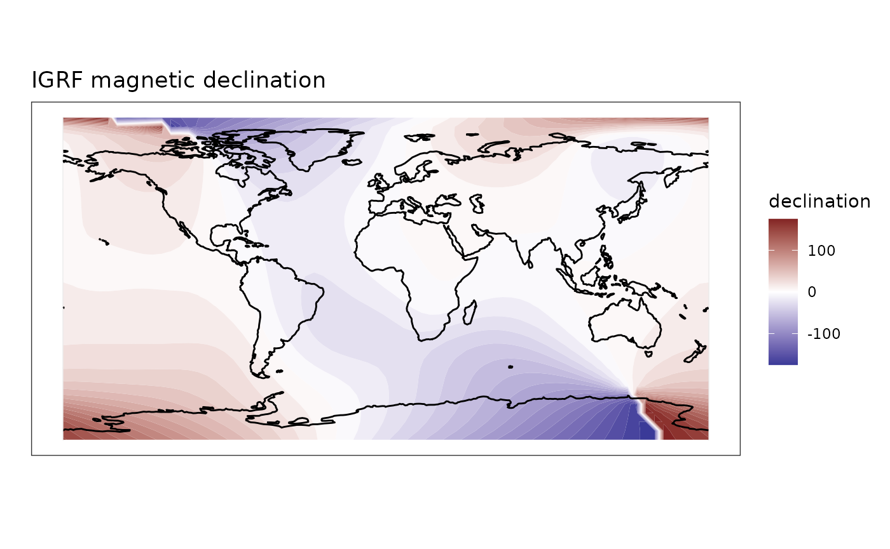

IGRF values can be calculated for a single point using the below call. This will generate a data frame with model values. The routine is relatively fast so looping over a time vector will generate time series fairly quickly. To calculate grids a simple function is provided (see below).
You may generate global maps of the IGRF using the igrf_grid() function, setting similar parameters as above while specifying a resolution as decimal degrees of the global grid. Keep in mind that values under 1 (fractions) will take an increasing amount of time and space to store the data.
grid <- igrf::igrf_grid(
field = "main",
year = 2000,
altitude = 2,
resolution = 5
)
print(head(grid))
#> lon lat X Y Z F D H I
#> 1 -180 -90 -14558.63 7793.387 -53321.91 55820.39 151.8394 16513.34 -72.79269
#> 2 -175 -90 -13823.99 9032.599 -53321.91 55820.39 146.8394 16513.34 -72.79269
#> 3 -170 -90 -12984.14 10203.067 -53321.91 55820.39 141.8394 16513.34 -72.79269
#> 4 -165 -90 -12045.48 11295.884 -53321.91 55820.39 136.8394 16513.34 -72.79269
#> 5 -160 -90 -11015.14 12302.732 -53321.91 55820.39 131.8394 16513.34 -72.79269
#> 6 -155 -90 -9900.97 13215.949 -53321.91 55820.39 126.8394 16513.34 -72.79269
library(ggplot2)
library(metR)
library(rnaturalearth)
coast <- ne_coastline(returnclass = "sf")
ggplot(grid) +
geom_contour_fill(
aes(
lon,
lat,
z = D
),
breaks = MakeBreaks(10)
) +
geom_sf(
data = coast) +
scale_fill_divergent(
name = "declination"
) +
labs(
x = "",
y = "",
title = "IGRF magnetic declination"
) +
theme_bw() +
theme(
plot.background = element_rect(fill = "#ffffff", color = NA),
panel.background = element_rect(fill = "#ffffff", color = NA)
)